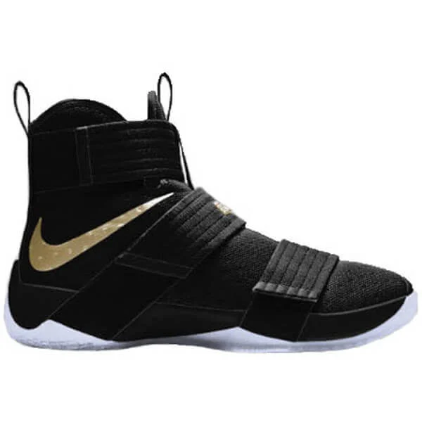
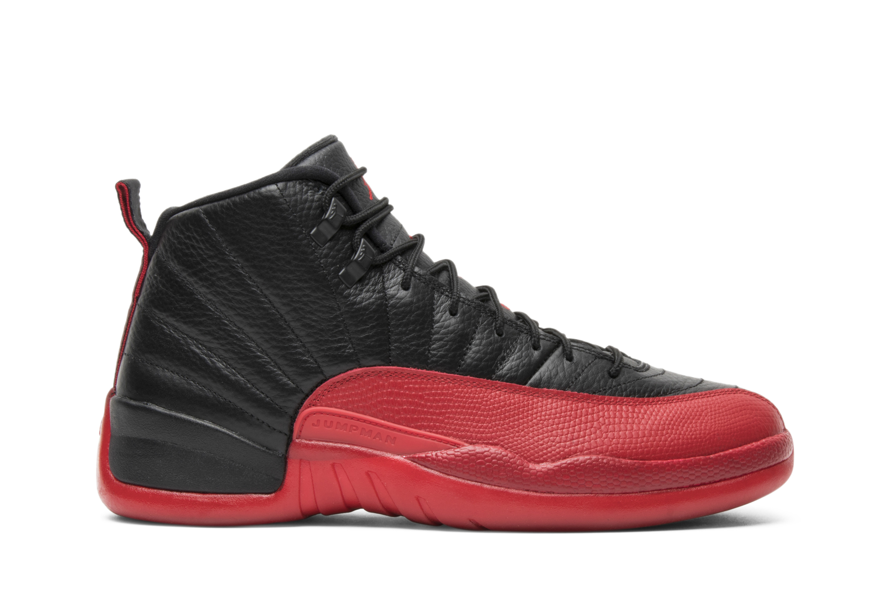

LeBron James or "King James" is arguably the best player of all time since 2016 finals against the juggernaut golden state warriors team who had the 73-9 record on regular season, he beat them with a vicious comeback in the series down 3-1 when he waear those shoes and then the rest is history!
 $150Michael Jordan or "Black Jesus" is arguably the greatest basketball player of all time, this shoes have an interesting history, it was the game five of the 1997 NBA Finals between Jordan's Chicago Bulls and the Utah jazz it was reported that Jordan had the flu before and during the game he was suffering from food poisoning. He still recorded 38 points, 7 rebounds, 5 assists and 3 steals pulling the Bulls ahead in the series.
 $150